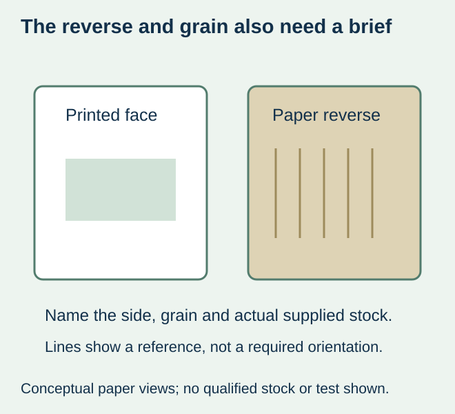
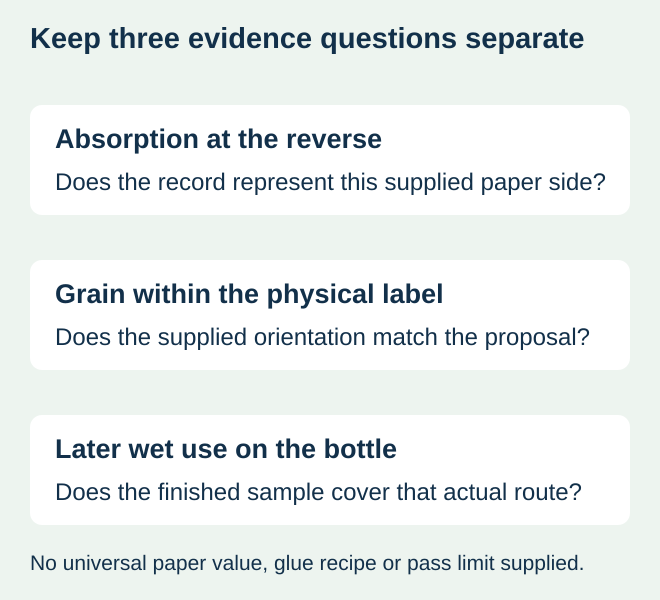

A beverage buyer requests wet-strength paper because the bottle will later be chilled. The proposed labels look right from the printed face, but the line owner asks for the reverse-side specification and paper grain direction. Those questions concern how the label is processed and applied, not simply whether the paper remains acceptable in wet service.
Use the actual cold-glue station requirements to identify the paper, reverse-side behaviour and orientation before accepting the offer. Wet strength, water uptake and directional response describe different aspects of the label. Do not turn one favourable paper description into approval of all three, or transfer a pressure-sensitive roll specification to a cut-and-stack job.


Three paper questions belong in the material request
| Question | What to identify | What it does not establish |
|---|---|---|
| Reverse-side water absorption | Exact supplied paper/reverse treatment and the relevant agreed measurement basis | A universal best Cobb number or a glue setting |
| Paper grain and orientation | Actual grain relative to the label edges and application reference | A rule to copy the artwork’s reading direction |
| Wet-service requirement | The complete printed/applied label under the intended chilling or moisture route | The reverse-side application behaviour by itself |
| Complete process | Actual station, bottle, adhesive proposal and representative sample | A result for a different line or paper grade |
The DBB/BVDM January 2024 specifications for paper beverage-bottle labels, hosted by VLB Berlin treat grain direction, wet/dry strength, water absorption and wet stretching as separate properties. Its explanation relates reverse-side Cobb information to water and glue uptake, while explicitly distinguishing that value from wet expansion. Read the document within its application scope and agree the actual order requirements; it is not a universal rule for every label or proof of a qualified construction offered here.
Define the reverse side as supplied
Ask the converter to identify the actual stock and any treatment on its reverse. A front-side laminate, varnish or decorative appearance does not describe the other face. A sheet that looks unchanged from the artwork side may therefore leave an important process input unresolved.
Where a report is supplied, retain its sample identity, side tested, method, conditions and result basis. Have the paper, adhesive and equipment parties explain the comparison required for the job. Do not rank proposals by a high or low water-uptake number alone, or invent a corrective water or glue setting from a website.


Keep the grain reference separate from artwork orientation
Show the grain relative to named physical label edges, using the converter’s confirmed convention. Keep a readable artwork view alongside that material view. Rotating the graphic is not by itself evidence that the paper orientation changed, and a visual front panel does not establish the grain in the supplied stack.
For a hypothetical beverage changeover, a new cut layout might preserve the finished dimensions while changing how those edges relate to the paper stock. Ask whether the actual supplied orientation still represents the accepted application evidence. If that information is missing, resolve it before calling the order unchanged.
This guide does not prescribe a universal horizontal or vertical grain direction. The actual contour, paper and application must be reviewed together. A marked sample can communicate orientation, while the equipment owner must determine which material and processing evidence is relevant.
Compare the actual supplied paper before changing the whole system
If an accepted paper and orientation already exist, use their identified references when asking for a repeat quote. If the supplier proposes a different paper, reverse treatment or layout, record that difference and request the supported comparison. Changing several inputs may produce an acceptable combination without identifying which input explains an earlier observation.
A paper sample can help discuss front appearance and basic geometry. It does not automatically represent the final print, decoration, cut, stack presentation and glue application. Request the specimen that answers the actual remaining question and keep any substitution visible.
Return to the finished bottle for the later-use decision
A paper suitable for the application still needs relevant evidence for the intended filled bottle and handling. The wet-service guide separates attachment, paper appearance and readable information during and after exposure. Do not replace that finished-pack decision with a reverse-side report.
The format guide handles cut-stack presentation and the broader supply-route comparison. Here the purchase must identify how the proposed paper relates to the actual cold-glue process. If that route is not offered or cannot be supported for the project, request clarification or a separately specified alternative. No cut-stack manufacturing, glue-system support, qualification service or numerical paper-performance promise is assumed available here.
Discuss the unresolved label requirement
Send the actual label role and bottle, equipment owner’s current paper/label specification, dimensions and orientation, proposed stock and reverse finish, and the labeling sequence. State whether you seek cut-stack supply or a pressure-sensitive alternative; available routes require confirmation. Review the beverage-label product scope and prepare a label specification inquiry. The contact page opens an email draft and lists email or WhatsApp for attachments. Supply, proof options, testing, pricing and timing require project confirmation.